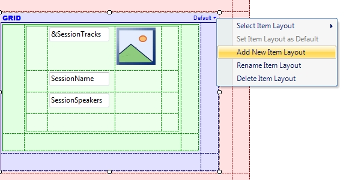
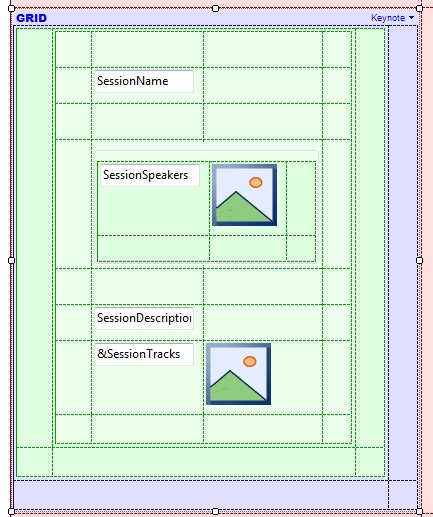

Multiple Layouts per Row
Mobile device applications that show repetitive data vary the way in which they show the data of an item in the collection. This is very common in news applications; for instance, when you want to highlight a news article to catch the user's attention or in other scenarios to achieve a non-uniform user interface. This feature called Multiple Layouts per Row significantly simplifies the implementation of this type of interfaces. PurposeTo create various alternatives for the way in which elements are arranged in a Grid for Smart Devices. How it worksFor example, let’s consider the EventDay application, in which there is a grid that loads all the sessions of an event that will be offered on a certain date. In addition, these sessions can be classified as Keynotes and ordinary sessions. Suppose that you want to change the layout of Keynote sessions to make them look more attractive than those sessions that are not Keynotes. To do so, you have to create a new Layout over the SD Grid of the sessions:


Event Grid.Load
If SessionIsKeynote
Grid1.ItemLayout = "Keynote"
EndIf
EndEvent
Feature in actionConsiderations
See Also
|

| Backlinks |
| Default Selected Item Layout property |